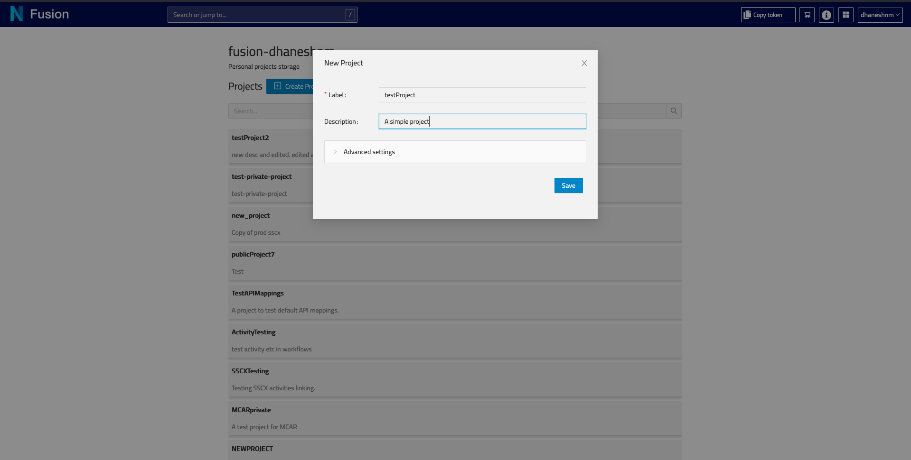

Admin
The Nexus Fusion admin app allows you to manage your Nexus Delta instance. In particular, you can:
- list, create, edit and deprecate organizations,
- list, create, edit and deprecate projects within an organization,
- check permissions on your projects and organizations,
- create, view, edit, and deprecate resources within your projects,
- query your Knowledge Graph with SPARQL and Elasticsearch views,
- create new Studios (or edit or deprecate them, as Studios are resources),
- check the indexing status of your projects.
Note: Some organizations in Nexus Delta are created to support Nexus Fusion internals, such as the
webappsorganization. Be careful when deleting those.
Organizations and Projects Indexes
When creating a project, you can use “Advanced Settings” to set Base, Vocab and API mapping for the project.
Base is an IRI used as a curie for generating ‘@id’ of this child resources of the project.
Vocab is an IRI used as a curie prefix for all unqualified predicates in child resources of the project. JSON object - provides a convenient way to deal with URIs when performing operations on a sub-resource. This field is optional.
More info can be found here regarding API Mappings.
Creating a New Organization
Creating a New Project


Project View
The project view in your admin app is the center stage to manage a project.
- On the left hand side, you will find the
Default Query. You can filter and search resources, order them, as well as share that query with your peers. You can create as many queries as you like by clicking+ Add another resource list. - On the right hand side, you find the
Project Tools. You’ll find the SPARQL and Elasticsearch query editors, and check the project permissions. You can also create a new resource and upload files. - “Manage studios for this project”, will take you to the studio sub application. There you can create/edit/update studios for this project.
In the header, the breadcrumbs menu shows the organization and project your are in. You can also check the indexing status of your project.
Creating a New Resource
Navigate to the project where you want to create a resource. Click on the “Create Resource” button in the right sidebar. Build the JSON payload with the help of the interactive editor, then hit “Save”.
Resource View
In resource view, you can see various visual representations of a Nexus Resource. Based on the resource type, you will see a set of plugins, each displayed on its own expandable section. By default, there will only be an admin plugin. You can read more about admin plugin here.